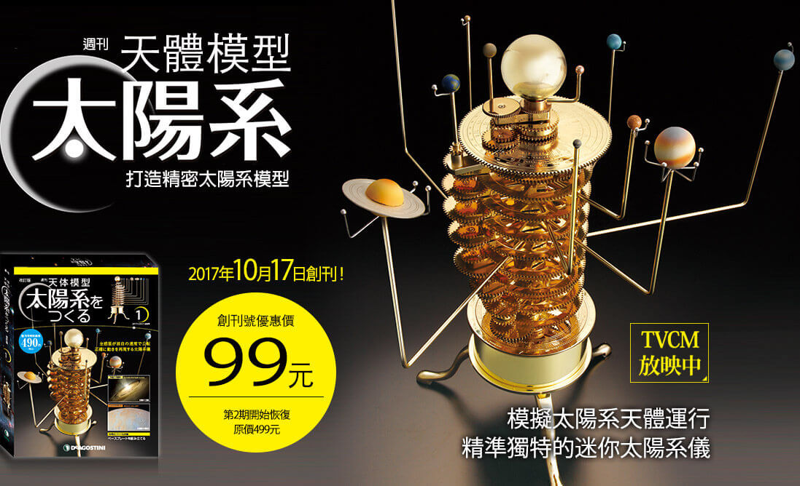
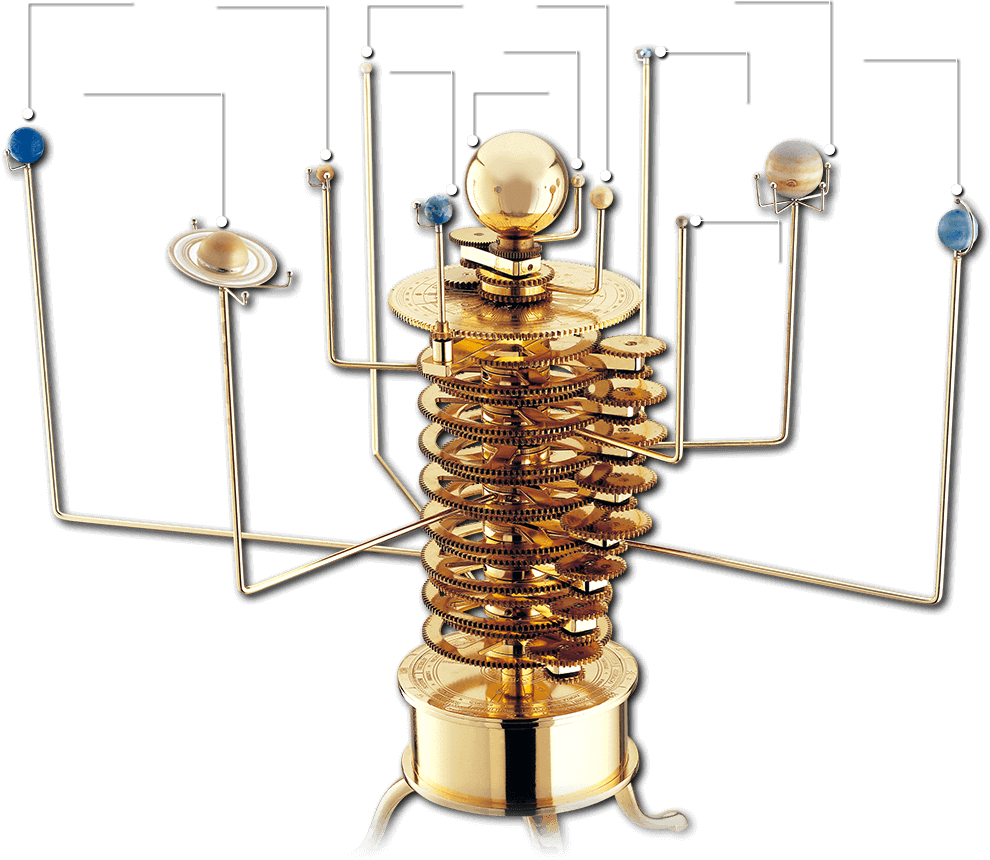

‘ 趕緊加入長期訂閱，不用擔心 售罄 或 忘記購買 喔♪ ’


※設計、顏色、規格等可能會變更，敬請諒解。
TVCM
神祕的太陽系結構一目了然！
各具特色的行星和矮行星環繞著太陽運轉，形成了太陽系。現在就開始動手組裝讓太陽系結構一目了然的迷你太陽系儀，揭開太陽系的奧祕！（本系列共52期）

日本國立天文台 副台長
渡部潤一教授推薦
詳細說明太陽系結構與天體運轉機制不是一件簡單的事。然而有太陽系儀就能清楚了解。精緻擬真的模型不僅是科學教具，還是漂亮的擺飾品！

每顆行星都附上主要的衛星！
彩色塗裝的手繪加工展現行星獨特魅力！
精密的齒輪結構，重現行星準確的運轉！
利用精美的齒輪底板，還原特定日期的行星排列運轉實況！
底座內置電動馬達。住家型一般插座即可使用。

太陽系的結構一目了然
─精確的行星、矮行星公轉週期─
透過大小齒輪的嚴密計算，將各行星及矮行星的公轉週期精準重現，太陽系的天體運轉模式一目了然。自轉週期雖與實際不同，仍清楚重現了自轉實況。

最適合當擺飾品
─閃耀著美麗黃銅光芒、質感厚實的連動齒輪─
黃銅與電鍍黃銅材質組成的模型質感渾厚沉穩。利用頂部齒輪的環狀刻度符號，可以將特定日期的行星排列還原重現。

太陽系被重新定義的關鍵日 行星、矮行星的最新樣貌
本模型依據2006年8月24日國際天文聯合會重新定義太陽系的決議內容，呈現太陽系的最新樣貌。矮行星穀神星和鬩神星也包含在內。
 點我看更多
點我看更多



尺寸

組裝作業的完整流程
第1～4期會完成太陽與核心柱的主要骨架組裝作業

第 5 期以後， 由內側的水星開始， 依序完成各行星、 矮行星， 以及讓行星轉動的齒輪組裝作業。

各行星與矮行星安裝完後，將底座安裝好，組裝作業就大功告成。
--- 雕刻著美麗符號的底板 ---
利用刻印符號，讓天體的運轉更縝密精準 ！
厚重的連動齒輪，加上美麗的底板刻印符號。
利用頂部齒輪與底板上的日期及記號，
讓太陽系行星運轉更加準確重現。
頂部齒輪上刻著數字、文字及記號。外圍數字表示角度，每10°為間隔。齒輪內側則刻著千禧年「西元2000年1月1日」、伯利恆之星「西元前7年10月1日」、IAU重新定義太陽系的「西元2006年8月24日」三個日期。只要調整行星位置配合標記，就能重現這些日期的行星排列。「伯利恆之星」是指出現在西元前7年10月1日這一天，三顆行星齊聚夜空的景象，被認為是預言耶穌基督誕生的象徵。如果想知道某個特定日期的行星位置，也可以調整外側角度刻度，就能重現當天的行星排列狀況。關於文字意義及使用方法，將於「太陽系模型的世界」單元中逐一解釋。


底板上也刻記著各種文字及記號。中心部位是國際天文聯合會重新定義太陽系的日期「西元2006年8月24日」，其外側則是表示行星位置的符號。底板與頂部齒輪的最大差異在於外側，有代表月份、日期及黃道十二宮的刻印。最外側的可調式校準環，刻著代表黃道十二宮的範圍記號。透過可調式校準環可補正春分點的偏移，也可以知道某年某日行星朝哪個星座方向移動。讀者們現在可能還有許多不明白的地方，都將會於「太陽系模型的世界」單元詳細解說善用文字記號的方法。
透過本週刊學習太陽系的基礎知識
除了太陽系模型的使用及組裝方法，
本週刊還介紹了各行星、星座、太陽系、太空科學及宇宙相關的豐富資訊。
持續閱讀本週刊，就能深入了解太陽系。
本單元說明底板及頂部齒輪上刻印記號的意義、使用方法以及關於模型的操作方法，還會詳細介紹太陽系儀及其他天體儀的歷史。

西元十八世紀製作的太陽系儀。有著太陽、地球及月球的三球儀。

介紹太陽系位置與大小，並詳細解說太陽與行星、矮行星、衛星等位於太陽系中的天體。慢慢揭開神祕的太陽系面紗。

以實際照片、 電腦數位影像或插畫等形式介紹太陽系行星、衛星，以及其他天體的驚異姿態。也會刊登哈伯太空望遠鏡及各地天文台所捕捉到的美麗照片。

從天文學啟蒙的史前遺跡，到太空探測器與人造衛星的尖端科技， 追溯天文學的歷史與發展進程， 並認識偉大天文學家的生平與成就。

每期介紹一個不同星座。內容包括星座中精彩的星系、 星團、 星雲， 還有與星座相關的神話等豐富資訊。

太陽是如何發光的呢？如何測量與各星星的距離呢？以淺顯易懂的方式解說天文學及太空科學的重要學說和理論。 此外還會介紹與宇宙相關的奇妙現象及未解之謎。

解開恆星發光之謎的漢斯．貝特（Hans Bethe）。

介紹每期零件，依步驟解說組裝方法。確認零件沒有遺漏後

組裝方法簡單，齒輪只要精準咬合即可，準備好螺絲起子和六角扳手，就可以組裝所有零件。

| 多元豐富的資訊專欄 | |
|---|---|
深入內幕挖掘真相並搭配深入淺出的說明易以理解。 |
追求突破補充與每期內容相關、改變世界的開創性理論。 |
運作原理太陽系儀模型組件的運作說明。 |
科幻探險科學事實與大眾文化之間的關聯。 |
技術解析聚焦在用於探索太陽系的設備。 |
太空科學名人堂影響天文學界的關鍵人物。 |
星空搜尋說明如何找出特定星座。 |
星座神話星座傳說的神話故事。 |


免運費
立即申請長期訂購專案！


‘ 趕緊加入長期訂閱，不用擔心 售罄 或 忘記購買 喔♪ ’
※官網長期訂閱讀者，贈品將隨第26期雜誌寄送。 ※設計、性能等可能會有所變更。